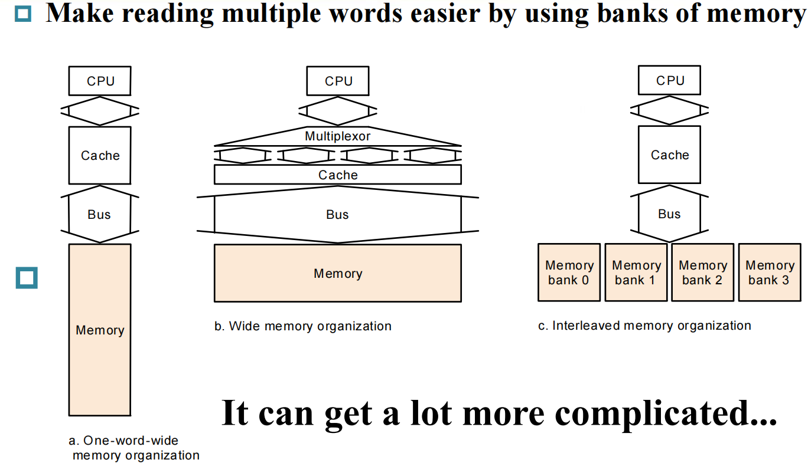
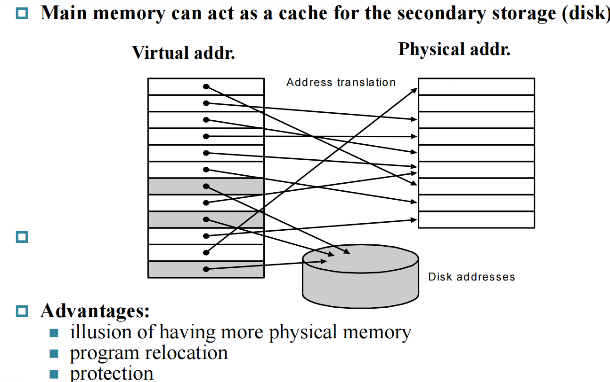
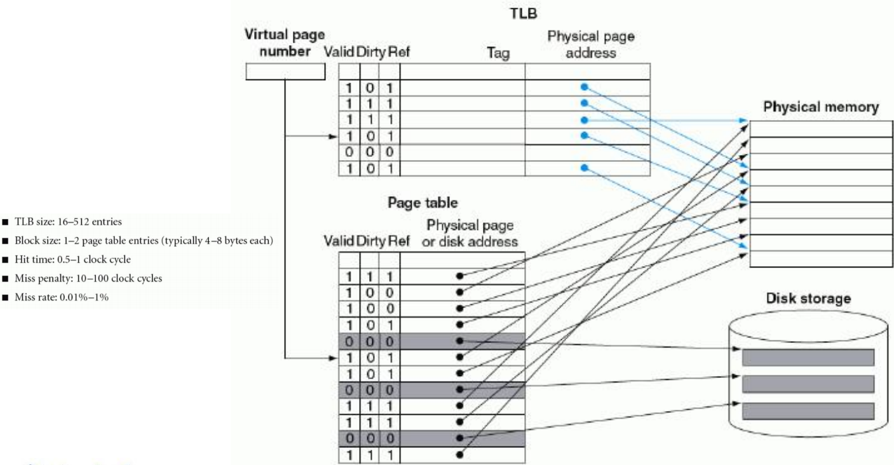
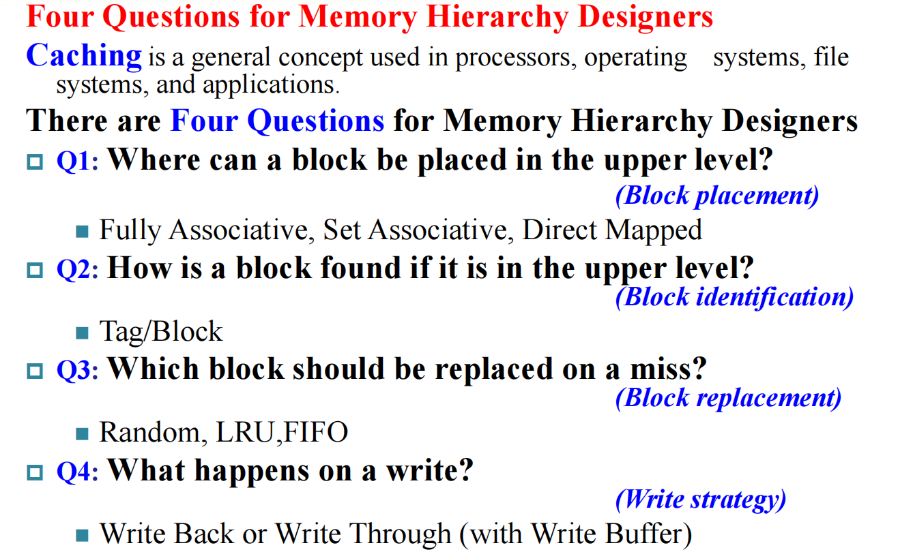

计算机组成5-3:存储系统的性能优化与全局视角
第一部分：Cache性能的量化分析——AMAT的威力
我们不能仅仅停留在“组相联比直接映射好”这样的定性结论上。一个优秀的架构师，必须能够用数据说话。衡量存储系统性能的黄金公式——平均访存时间（AMAT），是我们手中最锋利的解剖刀。
$$ \text{AMAT} = \text{Hit Time} + \text{Miss Rate} \times \text{Miss Penalty} $$
这个公式告诉我们，性能优化有三条路径。但更重要的是，它揭示了三者之间的内在联系与制约。例如，增加相联度可以降低Miss Rate，但可能会略微增加Hit Time。我们的目标，是找到让AMAT最小化的“甜点区”。
1.1 将AMAT与CPU性能公式结合
AMAT本身只是衡量存储系统的指标。要看它对整个计算机性能的影响，我们必须将它与CPU性能公式结合起来。内存访问导致的CPU停顿，是CPI（每指令周期数）的重要组成部分。
$$ \text{CPI}{\text{total}} = \text{CPI}{\text{execution}} + \frac{\text{Memory Stall Cycles}}{\text{Instruction Count}} $$
而内存停顿周期又可以细分为： $$ \text{Memory Stall Cycles} = (\text{Reads} \times \text{Read Miss Rate} \times \text{Read Miss Penalty}) + (\text{Writes} \times \text{Write Miss Rate} \times \text{Write Miss Penalty}) $$
或者更一般地： $$ \text{Memory Stall Cycles} = \text{Instruction Count} \times \frac{\text{Memory Accesses}}{\text{Instruction}} \times \text{Miss Rate} \times \text{Miss Penalty} $$
示例分析： 假设一个处理器：
- 基础CPI（假设Cache完美命中）= 2.0
- 指令Cache缺失率 = 2%
- 数据Cache缺失率 = 4%
- 访存指令（ld/sd）占所有指令的36%
- 缺失代价（Miss Penalty）= 100个时钟周期
计算停顿：
- 每100条指令，有
100 * 2% = 2次指令缺失，带来2 * 100 = 200周期停顿。 - 每100条指令，有
100 * 36% = 36次数据访问，其中有36 * 4% = 1.44次数据缺失，带来1.44 * 100 = 144周期停顿。 - 总停顿 =
200 + 144 = 344周期。 - 平均每条指令的停顿 =
344 / 100 = 3.44周期。
最终CPI：
CPI_total = 2.0 (基础) + 3.44 (停顿) = 5.44
结论：一个看似“还不错”（96%~98%命中率）的Cache，竟然让CPU的性能下降了一半以上！CPU有超过一半的时间（3.44 / 5.44 ≈ 63%）是在无聊地等待内存。这凸显了存储系统性能的极端重要性。
这个例子也引出了著名的Amdahl定律在存储系统中的体现：单纯地加速CPU（例如将基础CPI从2.0降到1.0），而存储系统不变，性能提升将非常有限。因为瓶颈会迅速转移到内存停顿上。
第二部分：降低缺失率(Miss Rate)的核心武器
我们已经探讨了通过增加相联度来降低冲突缺失。另一个强大的武器是利用空间局部性。
2.1 增大缓存块（Cache Block）的大小
- 基本思想：当发生一次缺失时，我们不仅仅取回CPU当前需要的那个字，而是把它周围的一片数据（例如64字节）作为一个整体——一个块（Block）——都取回缓存。
- 理论基础：空间局部性。既然CPU访问了
array[i]，那么它很可能马上就要访问array[i+1],array[i+2]... 将它们一次性取回，后续的访问就都会变成高速的Cache命中。 - 效果：
- 优点：可以显著降低强制性缺失（Compulsory Miss）。对于一段连续内存的首次访问，原本需要N次缺失，现在只需要一次缺失就能把整个区域的数据读入。
- 缺点：
- 增加了缺失代价（Miss Penalty）：从主存传输一个更大的块需要更长的时间。
- 可能增加冲突缺失：如果块太大，而缓存总容量不变，那么缓存中的总块数就减少了。这会增加不同内存区域映射到同一个缓存块的概率。
- 带宽浪费：如果程序没有表现出很好的空间局部性，那么取回一个大块中的大部分数据可能都是无用的，浪费了宝贵的内存带宽。

2.2 如何高效地支持大块传输？——主存的组织
增大大块的策略，对主存（DRAM）的设计提出了新的要求。如果主存每次只能传输一个字（4或8字节），那么传输一个64字节的块就需要8到16次操作，缺失代价会变得无法接受。因此，需要设计更“宽”的主存系统。

- 简单模型（窄内存）：内存总线一次只传一个字。传输4个字需要4次完整的访存周期。
- 宽内存模型：将内存芯片并联，让内存控制器可以一次性读取多个字（例如，128位或256位总线宽度）。这可以成倍地减少传输次数，但增加了内存控制器的复杂度和成本。
- 交叉/交错内存（Interleaved Memory）：将内存分成多个独立的体（Bank）。连续的地址被映射到不同的Bank上。当需要读取一个大块时，可以同时向多个Bank发出读请求，这些请求可以并行处理，然后数据依次（流水线式地）返回。这是一种在成本和性能之间取得良好平衡的高效设计，是现代DRAM模组的标准实践。

第三部分：降低缺失代价(Miss Penalty)的核心武解决——多级缓存
既然一次主存访问的延迟（几百个周期）是如此之高，我们能否在CPU和主存之间，再增加一个“中间人”？这就是**多级缓存（Multilevel Caches）**的思想。
3.1 设计哲学与结构
- 核心思想：在原有的L1 Cache和主存之间，插入一个容量更大、但速度比L1稍慢的L2 Cache。现在，L1的缺失，可以先由L2来服务。
- L1 Cache：设计目标是极低的命中时间（Hit Time）。因此它通常容量较小、相联度较低，与CPU核心紧密集成，追求1-2个周期的访问延迟。
- L2 Cache：设计目标是极低的缺失率（Miss Rate）。它负责捕获绝大多数从L1“漏掉”的访问。因此它的容量要大得多，相联度也更高。它的命中时间虽然比L1长（例如10-20个周期），但远小于访问主存的几百个周期。
3.2 性能分析：全局与局部AMAT
引入L2后，性能公式变得更加复杂：
$$
\text{AMAT}{\text{L1}} = \text{HitTime}{\text{L1}} + \text{MissRate}{\text{L1}} \times \text{MissPenalty}{\text{L1}}
$$
其中，L1的缺失代价，现在变成了访问L2的时间：
$$
\text{MissPenalty}{\text{L1}} = \text{AMAT}{\text{L2}} = \text{HitTime}{\text{L2}} + \text{MissRate}{\text{L2}} \times \text{MissPenalty}_{\text{L2}}
$$
MissPenalty_L2 才是真正访问主存的代价。
示例分析： 假设：
- 5GHz CPU（时钟周期0.2ns），基础CPI=1.0
- L1 Cache: 2%缺失率
- L2 Cache: 5ns命中时间，加入后，访问主存的全局缺失率降至0.5%
- 主存: 100ns访问延迟
只有L1时：
- 主存缺失代价 = 100ns / 0.2ns/cycle = 500周期
- Total CPI = 1.0 + 2% * 500 = 1.0 + 10 = 11.0
加入L2后：
- L2命中时间 = 5ns / 0.2ns/cycle = 25周期
- 主存缺失代价 = 500周期
- 分析停顿：
- L1的访问，有98%是L1命中（代价为0停顿）。
- 有2%是L1缺失。这2%的缺失中，大部分会在L2命中，少部分会L2也缺失。
- 访问L2的次数 =
MissRate_L1= 2% - 访问主存的次数 =
GlobalMissRate= 0.5%
- Total CPI =
CPI_base + (L1 Misses per Ins * L2 Hit Time) + (Global Misses per Ins * Main Mem Penalty)- 在本例的简化计算中:
Total CPI = 1.0 + (指令级L1缺失率 * L2命中时间) + (指令级L2缺失率 * 主存缺失代价) = 1.0 + (2% * 25) + (0.5% * 500) = 1.0 + 0.5 + 2.5 = 4.0
- 在本例的简化计算中:
- 性能提升 = 11.0 / 4.0 = 2.75倍！
结论：多级缓存是现代处理器应对“内存墙”问题的标配。通过L1和L2（以及L3）的协同工作，实现了对命中时间、缺失率和缺失代价的综合优化。
第四部分：思想的升华——虚拟内存，作为主存的“缓存”
现在，让我们把视野拔高。我们已经建立了存储器层次结构的金字塔。我们一直在讨论金字塔顶端的SRAM Cache和DRAM主存。那么，DRAM主存和更下一层的磁盘之间，是否也存在着类似的关系？
答案是肯定的。这就是**虚拟内存（Virtual Memory）**的本质。
核心思想：将主存（DRAM）看作是磁盘（或SSD）的一个全相联的、写回式的缓存。

4.1 概念的类比与映射
让我们将Cache的术语，一一映射到虚拟内存中：
| Cache 概念 | 虚拟内存 概念 | 描述 |
|---|---|---|
| 块 (Block) | 页 (Page) | 数据传输的基本单位。Page非常大（通常4KB或更大）。 |
| 缺失 (Miss) | 页错误 (Page Fault) | CPU访问的虚拟地址所对应的页不在主存中。 |
| 命中 (Hit) | (无特殊术语) | 页在主存中，地址翻译成功。 |
| 地址 | 虚拟地址/物理地址 | CPU生成的是虚拟地址，需要被翻译成DRAM中的物理地址。 |
| 索引/标签 | 页表 (Page Table) | 页表是存储虚拟页号到物理页号映射关系的数据结构。 |
| 放置策略 | 全相联 | 任何一个虚拟页，可以被加载到物理内存的任何一个空闲的物理页框中。 |
| 替换策略 | 近似LRU | 由操作系统软件实现复杂的页替换算法。 |
| 写策略 | 写回 (Write-Back) | 使用“脏位”（Dirty Bit）来标记被修改的页。 |
4.2 为什么虚拟内存的设计选择如此不同？
-
巨大的缺失代价：一次磁盘访问的延迟是毫秒（ms）级别，相当于数百万个CPU时钟周期！为了摊平如此巨大的代价，我们必须：
- 采用巨大的块（页）：4KB的页大小，是为了最大化利用磁盘I/O的效率。
- 采用全相联放置：不惜一切代价降低缺失率，因为任何一次缺失都是灾难性的。
- 采用复杂的软件替换算法：百万周期的停顿，足以让操作系统运行复杂的LRU近似算法，做出最明智的替换决策。
-
地址翻译：
- 这个映射关系（虚拟页号 -> 物理页号）存储在内存中的页表里，由操作系统管理。
- 每次访存都需要先查页表，这本身就是一次内存访问，会让所有访存操作慢一倍！
- 解决方案：再次应用缓存思想！我们为页表项建立一个专用的、高速的、全相联的硬件缓存，称之为TLB (Translation-Lookaside Buffer)。绝大多数地址翻译请求都会在TLB中命中，无需访问内存中的页表。

4.3 虚拟内存带来的革命性优势
虚拟内存不仅仅是为了“缓存”磁盘，它还带来了三大革命性优势：
- 程序隔离与保护：每个进程都有自己独立的、私有的虚拟地址空间。操作系统通过控制页表，确保一个进程无法访问另一个进程的内存，提供了坚实的内存保护。
- 内存管理简化：程序员和编译器可以假设自己拥有一大片连续的内存空间，而无需关心物理内存的碎片化问题。内存的分配和布局由操作系统全权负责。
- 高效的进程间共享：操作系统可以让不同进程的虚拟页，映射到同一个物理页上，从而实现代码库或共享内存的高效共享。
总结：一个统一的框架
我们从量化分析Cache性能出发，学习了通过增大块和构建多级缓存来优化存储系统性能的关键技术。
最重要的是，我们建立了一个统一的视角来看待整个存储器层次结构。无论是CPU Cache，还是虚拟内存，它们都遵循着相同的基本原则：利用局部性，将数据在不同速度、不同容量的存储介质之间进行分块、分级管理。它们的设计差异，仅仅源于它们在层次结构中所处的位置不同，从而导致了命中时间、缺失代价、块大小等关键参数的巨大差异，并最终决定了它们应该由硬件（Cache）还是软件（虚拟内存）来实现。

这个统一的框架，是理解现代计算机系统中从硬件到操作系统协同工作的核心。